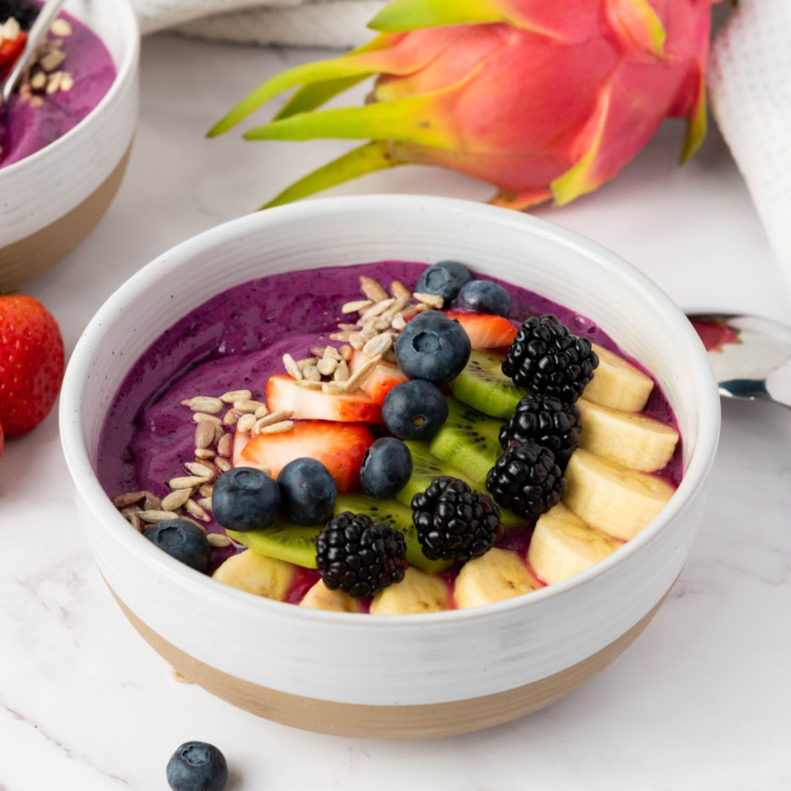

Fruit Smoothy
Home

Description
A thick, refreshing blend of fruit and plant milk, with no dairy or honey.
Ingredients
- 1 ripe banana (frozen is best)
- 1 cup mixed fruit (mango, berries or pineapple)
- 1 cup plant milk (soy, oat or almond)
- 1 tbsp chia or flax seeds
- 1-2 tsp maple syrup or dates (only if needed)
- A few ice cubes
Steps
- Add the plant milk to a blender first, then the fruit, seeds and sweetener.
- Blend 45-60 seconds until smooth.
- Add ice if you want it thicker, and blend again briefly.
- Pour and serve immediately.